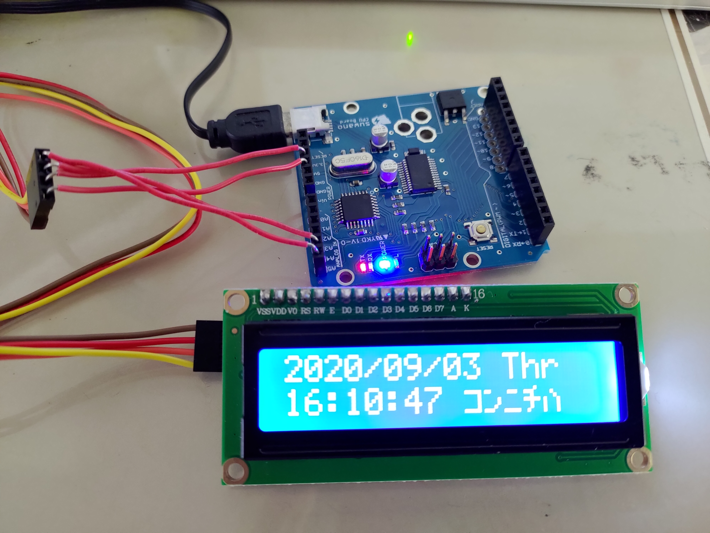

LCDに日付・時間表示

I2C搭載LCD
フルカラーLEDの制御

分圧回路を利用した電子オルガン（LED付）
//#include <Suwano.h>
//入力レベル設定
//suwano LEDなし
//int level[]={
// 0,510,680,767,819,853,878,896};
//suwano LEDあり
// int level[]={
// 377,695,802,856,889,911,927,939};
//tinkercad シミュレーション
int level[]={
404,708,811,863,894,916,931,942};
int tonearg[]={
262,294,330,349,392,440,494,523};
int n;
void setup() {
Serial.begin(9600);
}
void loop() {
int a = analogRead(0);
Serial.println(a);
if(a>1020){
noTone(9);
}
else{
for(n=0;n<8;n++){
if(level[n]-3a){
tone(9,tonearg[n],100);
}
}
}
}